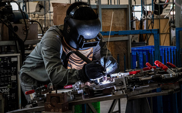

Nikkei: Việt Nam đã sẵn sàng cho hàng loạt doanh nghiệp nước ngoài đổ xô vào đầu tư?

Tờ Nikkei Asian Review cho biết, các khoản đầu tư từ những tập đoàn công nghệ khổng lồ đã thúc đẩy tăng trưởng của Việt Nam. Song, Việt Nam cần giải bài toán về chất lượng nguồn nhân lực để có thể bắt kịp với tốc độ phát triển của các nước được coi là "con hổ châu Á" trong quá khứ.